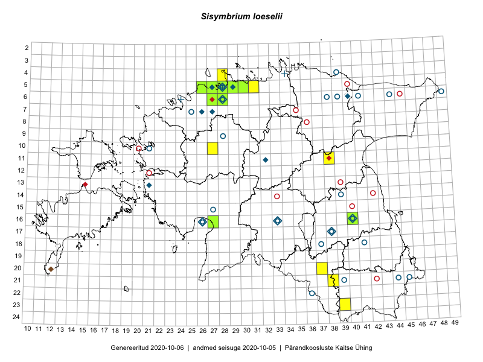

Sisymbrium loeselii
Uuendatud: 2016-12-08
Kaardile koondatud taksonid: Sisymbrium loeselii L.

Kaart põhineb 11 vaatlusel. Taime on leitud 10 ruudust.
| Ruut | Vaatleja(d) | Vaatlusaeg | Kirje tüüp | Viide andmebaasikirjele |
|---|---|---|---|---|
| 20-37 | Eeva-Maria Jeletsky, Tarmo Niitla | 2015-08-11 | ruut/ala | vaata PlutoFis |
| 21-38 | Eeva-Maria Jeletsky, Tarmo Niitla | 2015-08-11 | ruut/ala | vaata PlutoFis |
| 05-29 | Peedu Saar, Sander Laherand | 2013-07-07 | ruut/ala | vaata PlutoFis |
| 10-27 | Aat Sarv | 2015-07-02 | ruut/ala | vaata PlutoFis |
| 06-27 | Tõnu Ploompuu | 2015-08-11 | ruut/ala | vaata PlutoFis |
| 06-28 | Tõnu Ploompuu | 2015-06-06 | ruut/ala | vaata PlutoFis |
| 06-28 | Toomas Kukk | 2016-06-06 | ruut/ala | vaata PlutoFis |
| 11-38 | Eeva-Maria Jeletsky, Tarmo Niitla | 2016-06-09 | ruut/ala | vaata PlutoFis |
| 04-28 | Sander Laherand, Tõnu Ploompuu, Nele Jõessar | 2016-07-25 | ruut/ala | vaata PlutoFis |
| 05-31 | Sander Laherand, Toomas Kukk | 2016-08-30 | ruut/ala | vaata PlutoFis |
| 05-27 | Kadi-Liis Kesler | 2015-05-30 | ruut/ala | vaata PlutoFis |